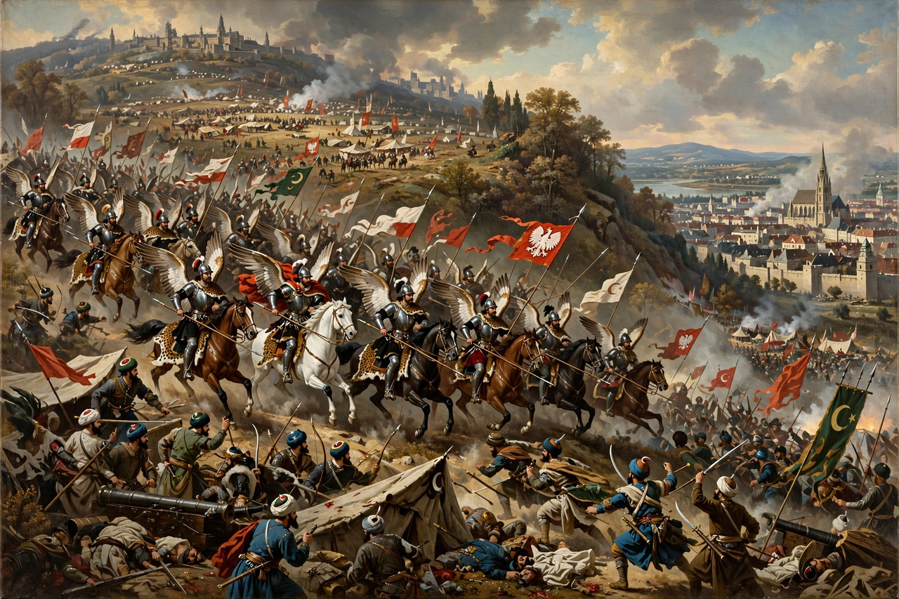

The Battle of Vienna took place on 12 September 1683 after the city had been besieged by the Ottoman Empire for two months. The battle was fought by the Holy Roman Empire and the Polish–Lithuanian Commonwealth, both under the overall command of King John III Sobieski, against the Ottomans under Grand Vizier Kara Mustafa Pasha.

| Battle of Vienna | |
|---|---|
| Date | 12 September 1683 |
| Location | Kahlenberg, near Vienna |
| Result | Christian coalition victory; siege lifted |
| Commanders | John III Sobieski; Charles of Lorraine; Ernst Rüdiger von Starhemberg — vs Kara Mustafa |
From 14 July 1683 some 150,000 Ottoman troops invested Vienna, defended by Starhemberg's garrison. A relief army of roughly 70,000–80,000 — Poles, Imperials, Saxons, Bavarians and others — crossed the Danube and descended from the Kahlenberg on 12 September. After a day of fighting, Sobieski led a massive cavalry charge — among the largest in history, spearheaded by some 3,000 Polish winged hussars — which broke the Ottoman army.
Kara Mustafa was executed in Belgrade. The victory began the Great Turkish War; the Holy League reconquered Hungary, and the Treaty of Karlowitz (1699) confirmed Habsburg gains. The battle is widely seen as a turning point in Ottoman expansion in Europe.
Recreated from memory.